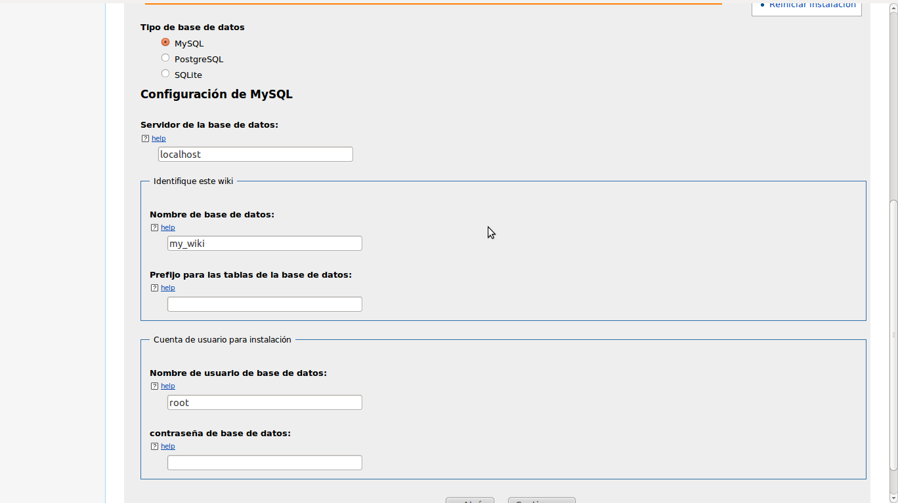
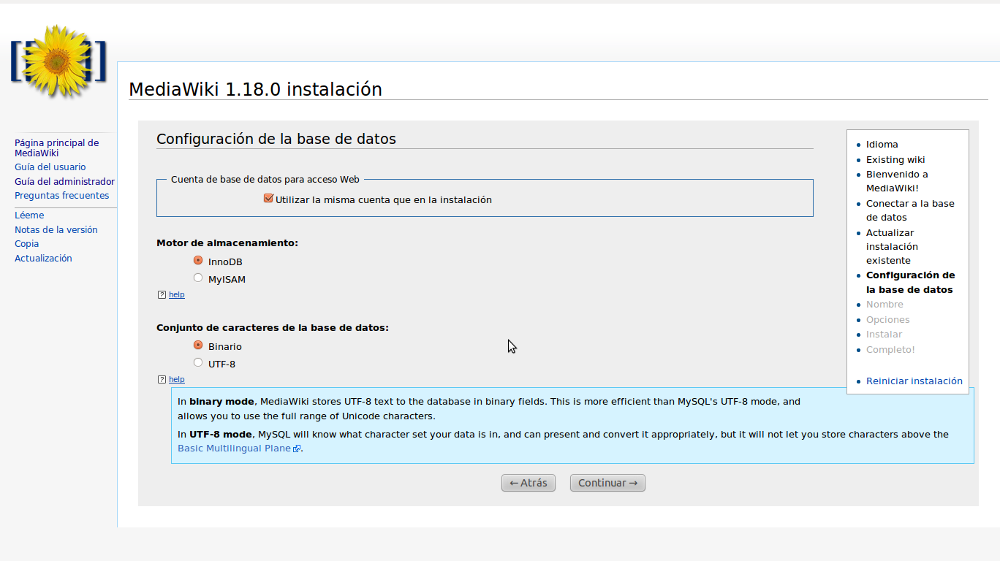
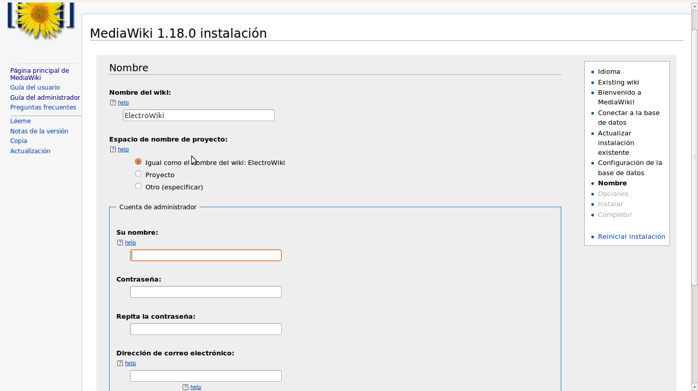
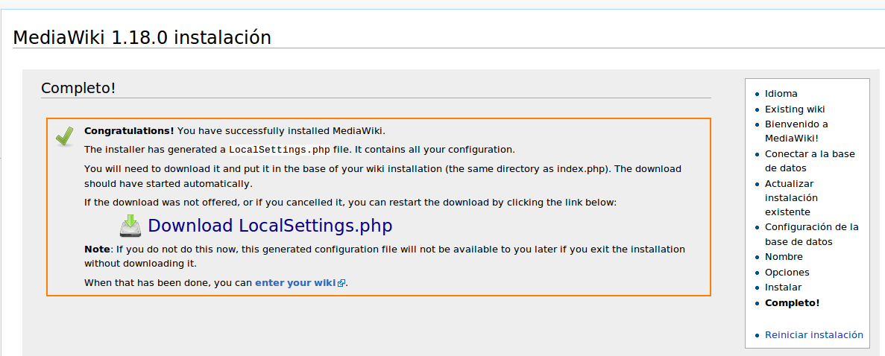
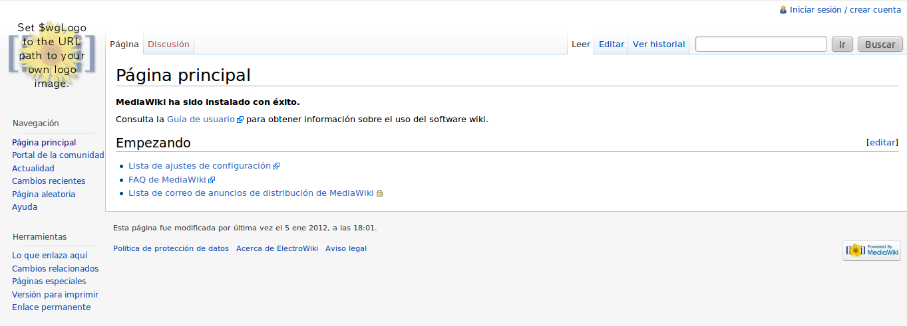

Introducción
Veremos como instalar una wiki en un servidor web montado en nuestro propio ordenador, subirla a un hosting online no seria muy distinto de lo que haremos aquí así que si deseas subirla a algún hosting puedes hacerlo fácilmente a raíz de lo explicado aquí. Las razones por las que querrías instalar tu propia wiki podrían ser varias, por ejemplo, tener una base de datos organizada con tus trabajos escolares indexados, crear contenido y compartirlo con otras personas, podrías ser un maestro por ejemplo y querrías ofrecer algunos materiales de apoyo a tus alumnos. En fin, aquí mostraremos como montar tu propia wiki, ya para que vayas a utilizar tu wiki es cosa tuya, en todo caso cabe recalcar que el proyecto podría llevarse a cabo con facilidad en un colegio o escuela pública, o hasta un grupo de amigos que deseen colaborar en sus estudios unos con los otros, solo por dar algunas ideas.
Que necesitamos:
- XAMPP, este trae consigo Apache, MySQL y PHP, haciendo que el uso y la instalación del mismo sea bastante intuitiva. Puedes descargarlo según tu sistema operativo XAMPP.
- MediaWiki, este es el software que usaremos para crear la wiki y puedes descargarlo MediaWiki.
Qué es XAMPP?
XAMPP es un servidor independiente de plataforma, software libre, que consiste principalmente en la base de datos MySQL, el servidor web Apache y los intérpretes para lenguajes de script: PHP y Perl. El nombre proviene del acrónimo de X (para cualquiera de los diferentes sistemas operativos), Apache, MySQL, PHP, Perl. El programa está liberado bajo la licencia GNU y actúa como un servidor web libre, fácil de usar y capaz de interpretar páginas dinámicas. Actualmente XAMPP está disponible para Microsoft Windows, GNU/Linux, Solaris y MacOS X.
Qué es MediaWiki?
MediaWiki es un software wiki libre escrito originalmente para Wikipedia. Ahora es utilizado por otros proyectos wiki de la Fundación Wikimedia y por otras wikis.
Como pueden deducir crearemos un proyecto totalmente Open Source, es decir, usando solo software libre.
En el caso de GNU/Linux la distro que sea, podríamos a ver preferido por instalar un servidor web full, es decir, Apache, MySQL y PHP cada uno por su lado, haciendo así de nuestra PC un total servidor web. Pero en vez de eso, hemos elegido XAMPP ya que lo que haremos sera una instalación simple hogareña y no queremos tener un servidor corriendo todo el tiempo, además este nos sirve para nuestro propósito, algo un poco mas intuitivo para hacerlo mas asequible a todos los lectores.
Instalando el XAMPP
Bueno ya que te descargaste el XAMPP del link puesto arriba vamos a empezar a instalarnos el XAMPP, en Windows lo descomprimimos y ejecutamos el instalador y seleccionamos como ruta de instalación *c:\xampp*, que me parece que es la ruta por defecto (yo estoy usando ubuntu), en cuanto a la pregunta de que si quieren inicial el panel de control de XAMPP eligen No, ya que por el momento no es necesario. En Linux abrimos una terminal, nos autentificamos como usuario root, nos dirigimos a la carpeta donde descargamos el archivo y luego tecleamos;
tar xvfz xampp-linux-1.7.7.tar.gz -C /opt
Con eso ahora tendríamos el directorio /opt/lampp donde se encuentra el XAMPP.
Instalando MediaWiki
Luego de habernos descargado el MediaWiki 1.18.0 del link que deje arriba, el cual esta en formato tar.gz bien conocido en sistemas GNU/Linux pero no así en windows, en todo caso en windows puedes extraerlo con winrar o 7zip, pues bien, en windows extraemos la carpeta en el directorio C:\xampp\htdocs.
En GNU/Linux lo extraemos del modo siguiente, abrimos una terminal y nos situamos en el directorio donde descargamos el archivo y lo extraemos así:
tar -zxvf mediawiki-1.18.0.tar.gz
Ahora tenemos una carpeta llamada mediawiki-1.18.0 la movemos a /opt/lampp-htdocs;
mv mediawiki-1.18.0 /opt/lampp/htdocs
Ahora para hacer la wiki mas asequible, mas fácil de escribir en la barra de direcciones, renombramos la carpeta mediawiki-1.18.0 a algo como wiki o mediawiki, yo la renombré a wiki por ser mas corto.
Iniciando los servidores
Ahora si vamos a iniciar los servidores, en windows dirigete a Inicio y busca XAMPP > XAMPP Control Panel, también puedes acceder por medio del acceso directo en el escritorio. Los servidores que necesitamos son Apache y MySQL, los demás puedes detenerlo; Filezilla y Mercury.
Nota: Si por alguna razón queremos detener los servidores, solo abrimos el control de panel de XAMPP y damos click en el apartado del servidor donde dice stop, para reiniciarlo por igual, dando click en restart.
En GNU/Linux iniciamos los servidores de la siguiente manera;
/opt/lampp/lampp start
Nota: Debemos ser root para poder iniciar los servidores en Linux. Siempre que encendamos nuestra PC y queramos usar la wiki, debemos iniciar lo servidores como hemos hecho anteriormente.
Otra nota: Para reiniciar los servidores en Linux, hacemos desde la terminal como root /opt/lampp/lampp restart, para detenerlos /opt/lampp/lampp stop. En la segunda parte veremos mas acerca de manejar los servidores en Linux.
Ahora para acceder al servidor desde el navegador, en la barra de navegación escribe localhost, veras una pagina de bienvenida en esta elige tu idioma.
Configurando MediaWiki
Ahora necesitamos configurar MediaWiki, para ellos nos dirigimos desde el navegador a la url localhost/nombre_wiki, en nombre_wiki va el nombre que le pusiste a la carpeta de MediaWiki en mi caso le puse wiki, así que seria así localhost/wiki. Ahora ves una pagina de presentación que dice que el archivo LocalSettings.php no fue encontrado, eso es normal ya nos encargaremos luego. Le damos click a set up de wiki. En la pagina que tenemos ahora seleccionamos nuestro idioma y el idioma que queremos para la wiki, yo seleccioné es-Español en ambos casos y damos click a continue.
En el siguiente apartado vemos una pagina de bienvenida, miramos debajo que diga lo siguiente; El entorno ha sido comprobado. Puedes instalar MediaWiki. Eso indica que todo va bien por el momento. Ahora damos click en continuar nuevamente debajo.

En la pagina que tenemos ahora (ver imagen arriba), en el apartado Tipo de base de datos dejamos MySQL que es la que esta preseleccionada por defecto y es la que usa XAMPP, en Configuración de MySQL > servidor de la base de datos lo dejemos tal cual esta en localhost ya que es en nuestro ordenador donde tenemos montado nuestro servidor.
En Nombre de base de datos si quieren pueden dejarlo tal cual esta como my_wiki yo usare otro nombre por cuestiones de seguridad en Prefijo para las tablas de la base de datos ponemos mw_ (nota el guión bajo), en Nombre de usuarios de base de datos lo dejamos como esta por defecto root que es el nombre por defecto de MySQL, en contraseña de base de datos lo dejamos en blanco tal cual esta, ya que así viene por defecto en MySQL eso podemos cambiarlo luego cuando nos aseguremos de que nuestra wiki funciona bien.
Nota: Apunta estos datos porque son prioritarios, lo necesitaras luego.
Pues sin mas presionamos nuevamente en continuar, en la pagina que estamos ahora dejamos todo por defecto (ver imagen debajo) y presionamos una vez mas en continuar.

Ahora procedemos a llenar los datos que nos solicitan en la pagina presente. En Nombre del wiki elegimos el nombre que nos plasca para nuestra wiki, yo le puse ElectroWiki ustedes pueden elegir el nombre que deseen. En Espacio de nombre de proyecto pueden dejarlo tal cual esta en la primera opción Igual como el nombre del wiki.
En el apartado Cuenta de administrador llenamos los datos solicitados para crear nuestra cuenta de administrador como sigue:
- Su nombre -> Aquí va tu nombre para la cuenta de administrador.
- Contraseña -> Una contraseña para tu cuenta.
- Repita la contraseña -> Aquí repites la contraseña anterior.
- Dirección de correo electrónico -> Aquí pones un correo tuyo, si haces accesible tu web desde el Internet es bueno que pongas un correo para si alguien quiere comunicarse contigo.

Debajo donde dice Subscribirse para recibir avisos de nuevas versiones te recomiendo que marques esa casilla, para que actualizes tu wiki siempre que sea necesario, ya que de vez en cuando se descubren bugs y esas cosas.
Debajo tenemos dos opciones en las cuales elegir:
- Házme mas preguntas
- Ya estoy aburrido, sólo instala el wiki.
De estas dos elegimos la segunda, los demás ajustes pueden realizarlos luego según deseen. Ahora proseguimos a pulsar en continuar.
Nota: Guarda todos estos datos porque son tus datos de acceso a la wiki, lo necesitaras para poder escribir, editar y demás.**
La siguiente pagina nos dice:
By pressing "Continuar →", you will begin the installation of MediaWiki. If you still want to make changes, press back.
Presionamos continuar para instalar nuestra wiki y en unos segundos esta nos muestra lo siguiente, en caso de que todo ha ido bien:
Instalar
- Configurando la base de datos... hecho
- Creando tablas... hecho
- Creando el usuario de la base de datos... hecho
- Llenando la tabla interwiki predeterminada... hecho
- Initializing statistics... hecho
- Generación de claves secretas... hecho
- Creando cuenta de usuario del administrador... hecho
- Creating main page with default content... hecho
Ahora proseguimos y presionamos en continuar. Entonces si todo ha ido bien, nos sale el siguiente mensaje de la imagen abajo y se inicia la descarga del archivo LocalSettings.php elegimos guardar, este tiene la configuración de toda nuestra wiki y el cual necesitaremos para modificar luego cualquier otra cosa y en general para el funcionamiento de la misma. Si no se inicio la descarga automáticamente damos click donde dice Download LocalSettings.php.

Como nos dice la misma pagina presente necesitamos mover el archivo LocalSettings.php al directorio donde se encuentra el index.php de nuestra wiki, en GNU/Linux lo movemos al directorio /opt/lampp/htdocs/wiki
mv LocalSettings.php /opt/lampp/htdocs/wiki/
En windows lo copiamos y lo pegamos en el directorio c:\xampp\htdocs\wiki.
Ahora en la misma pagina donde estamos situados aun, damos click debajo donde dice "When that has been done, you can enter your wiki" exactamente en la parte enter your wiki.
Si todo ha ido bien veremos la pagina debajo (ver imagen) con nuestra wiki funcionando perfectamente.

En lo adelante siempre que queramos acceder a nuestra wiki solo debemos poner en la ruta de direcciones del navegador web http://localhost/wiki, claro ten en cuenta que el XAMPP debe estar iniciado para poder acceder a tu wiki.
Ya puedes empezar a escribir en tu propia wiki!!!
nota final: Este articulo no es muy reciente a pesar de la fecha de publicación, fue rescatado de mi antiguo blog, pero aún sigue siendo útil, solo que las versiónes mas recientes de MediaWiki y XAMPP serán otras, por tanto, algunas cosas puede ser que hayan cambiado.